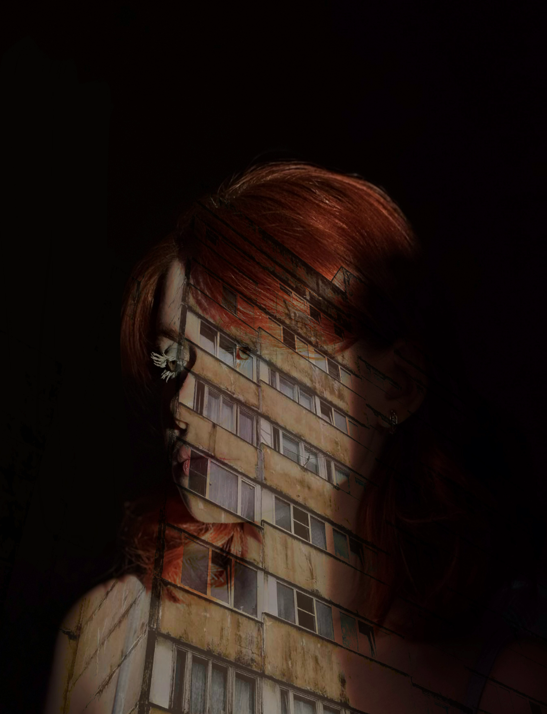
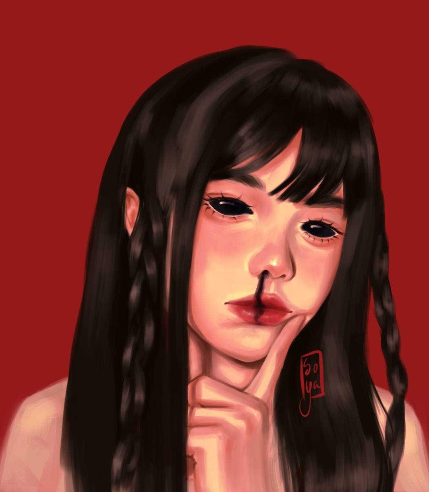
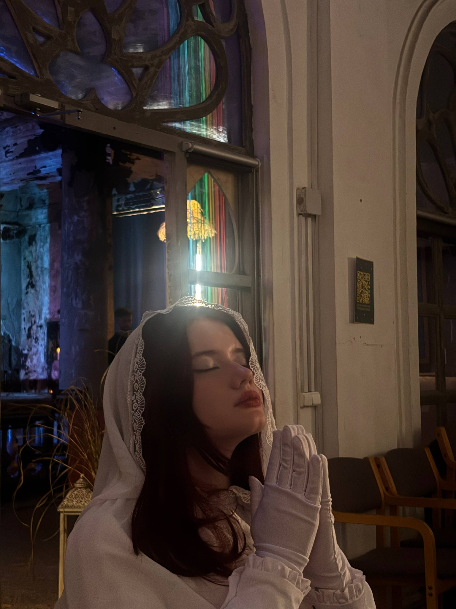
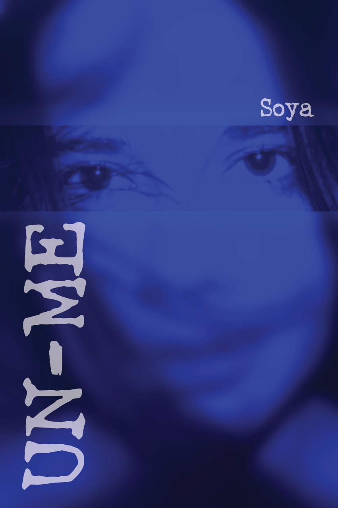
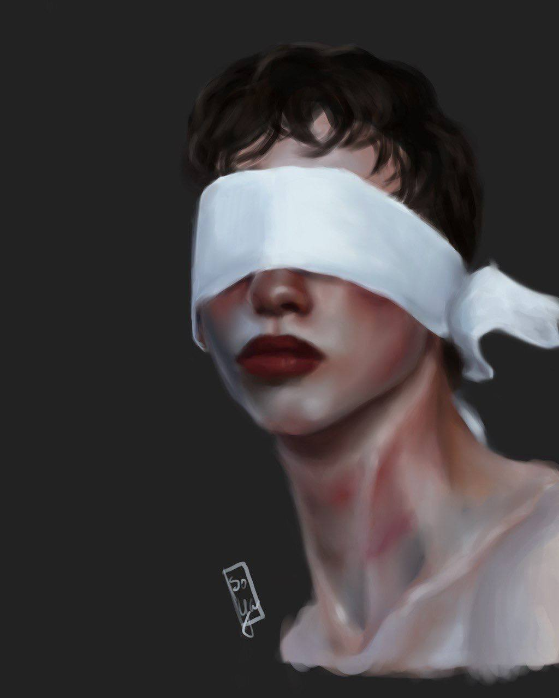
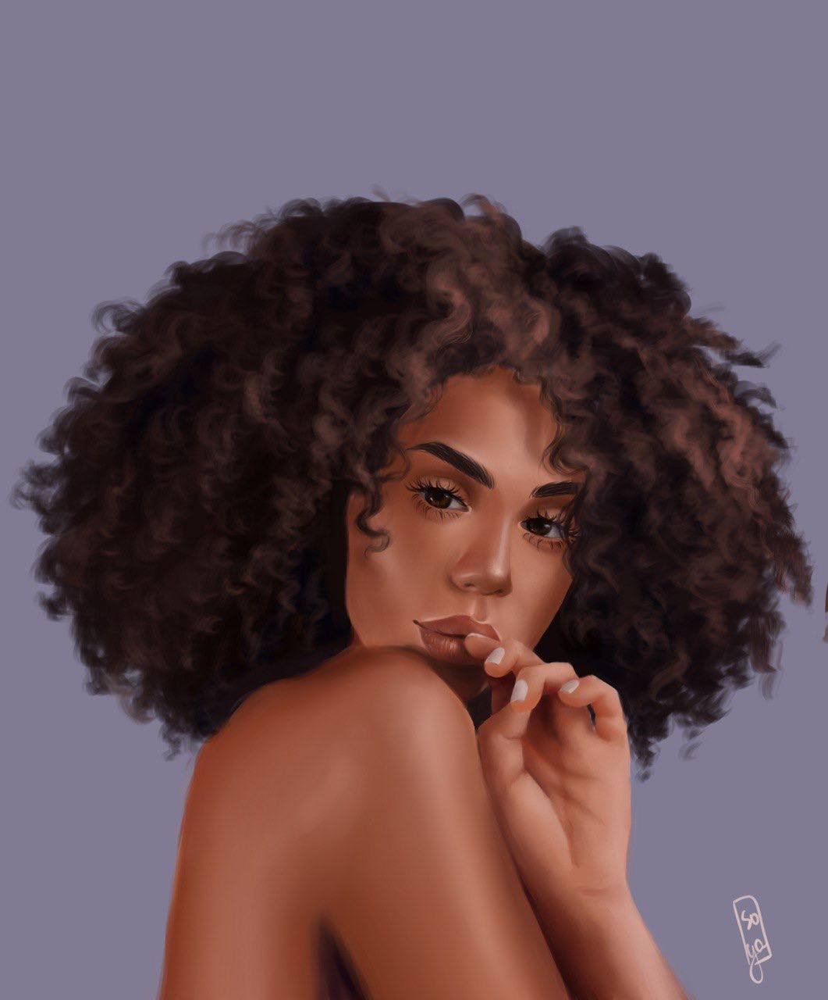
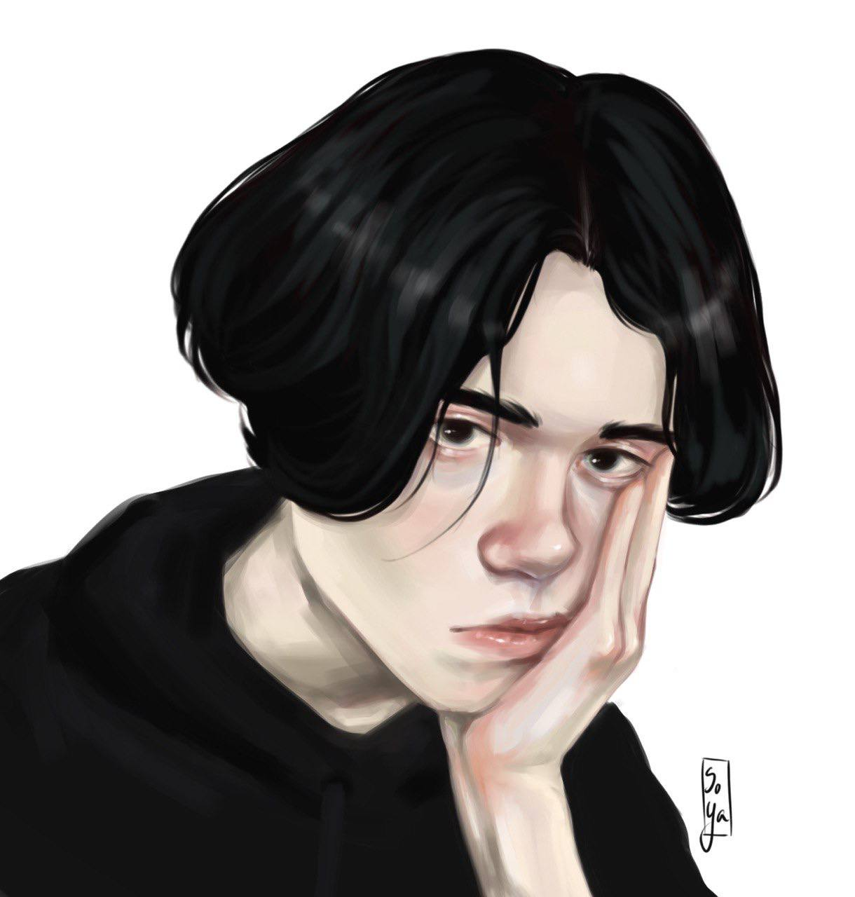
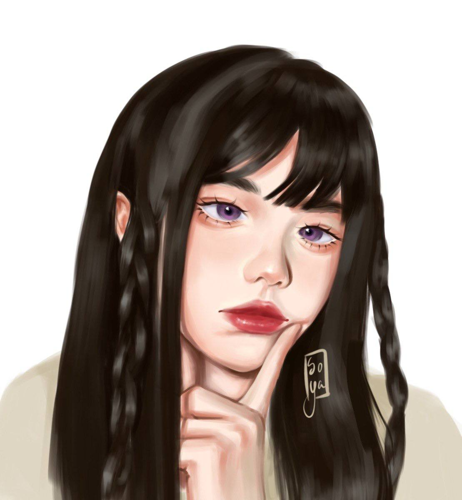

LAST SPARK ↗
Концепция атмосферной 3D-игры: персонажи, локации, рендеры и интерфейсы.
ПРИКЛАДНАЯ ИНФОРМАТИКА В ДИЗАЙНЕ / ПОРТФОЛИО 2026
Создаю визуальные истории на стыке дизайна, искусства и цифровых технологий.




Меня зовут Софья Макрушина. Я учусь на направлении «Прикладная информатика в дизайне» и создаю проекты в области графического дизайна, иллюстрации, 3D, анимации и фотографии.
Окончила художественную школу, завершаю обучение в университете. Работала над реальными проектами, выступала перед публикой и защищала собственные работы.
«Мне интересно превращать идеи в образы, которые хочется рассматривать».
Концепция атмосферной 3D-игры: персонажи, локации, рендеры и интерфейсы.
Четыре видеоработы для модного показа.

Авторская фотокнига о деперсонализации · 2025.
Постановочная съёмка, композиция, цвет и работа со светом.
В этой категории пока нет проектов.
Цифровые портреты и иллюстрации




ЛИСТАЙ →
Предметные истории и визуальные эксперименты


ЛИСТАЙ →
Открыта к творческим проектам, коллаборациям и новым идеям.
НАВЕРХ ↑